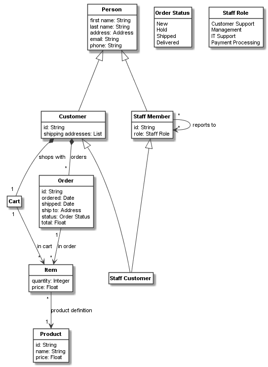
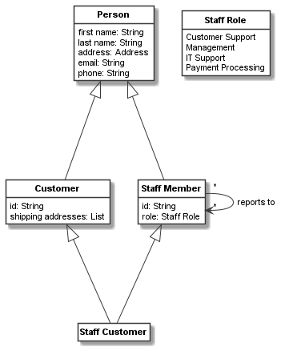
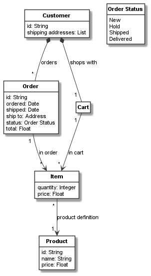

Class relationships: associations and inheritance¶
Defining associations¶
Associations have been introduced in the previous examples implicitly. Lets discuss them in a bit more detail. They are defined on one of the classes which are associated with each other. For example one of the previously defined associations was:
order_item_relation = order.association(item, "in order: [order] 1 -> [item in order] *")
Here, class order is associated to class item. As explained in the documentation of CAssociation,
either keyword arguments or the shorter association descriptor string (with the syntax explained in
CAssociation) can be used. That is, the following definition is equivalent to the one above:
order_item_relation = order.association(item, name="in order", role_name="item in order",
multiplicity="*", source_role_name="order",
source_multiplicity="1")
The method association defined on CClassifier is used here to define the association. Equivalently,
the constructor of CAssociation can be used, for example the following also works:
order_item_relation = CAssociation(order, item, "in order: [order] 1 -> [item in order] *")
All those ways to define an association return an object of type CAssociation that can be used
as a handle for the association. We can use this handle to change the association, e.g. add a
stereotype to it, or use it for defining links.
Introspecting associations¶
As associations are mainly used on links and classifiers, both CLink and CClassifier
offer ways to introspect the association(s) used on
them. See the examples on objects and links, or the documentations of CLink and CObject,
for more on links and their associations. Here, we focus on introspecting associations on CClassifier
(and its sub-classes).
From any classifier we can use the two getter properties associations or all_associations for either
listing the associations of the classifier or listing all associations of the classifier including those
of superclasses, respectively. Both return a list of CAssociation objects.
For example, the following prints source and target via the CAssociation objects for each
association defined on the order class:
for association in order.associations:
print(f"SOURCE = {association.source!s} -> TARGET = {association.target!s}")
The following result will be printed:
SOURCE = Order -> TARGET = Item
SOURCE = Customer -> TARGET = Order
Suppose we want to get a list of all classes linked to order. Then it might be unhandy that order is sometimes
source and sometimes target of the association. Here, get_opposite_classifier() can help:
print("Classes associated to order:")
for association in order.associations:
print(f"- {association.get_opposite_classifier(order)!s}")
This would print:
Classes associated to order:
- Item
- Customer
Inheritance definition¶
Codeable models supports single and multiple inheritance for all classifiers. An inheritance relation
is defined by passing either a classifier (for single inheritance) or a list of
classifiers (for single or multiple inheritance) to the
superclasses method or keyword argument of the classifier.
For example, consider we want to support two kinds of persons in our system: customers and staff members. Both
share some common attributes defined on the class person:
person = CClass(domain_metaclass, "Person", attributes={
"first name": str,
"last name": str,
"address": address,
"email": str,
"phone": str
})
Now can define the Customer and Staff Member classes with their attributes and additional associations.
Please note that they are both derived from the person class via inheritance using the statement
superclasses=person in the keyword arguments:
customer = CClass(domain_metaclass, "Customer", superclasses=person, attributes={
"id": str,
"shipping addresses": [],
"selected shipping address": 0
})
customer_cart_relation = customer.association(cart, "shops with: [customer] 1 <*>- [cart] 1")
customer_orders_relation = customer.association(order, "orders: [customer] 1 <*>- [order] *")
staff_role = CEnum("Staff Role", values=["Customer Support", "Management",
"IT Support", "Payment Processing"])
staff_member = CClass(domain_metaclass, "Staff Member", superclasses=person, attributes={
"id": str,
"role": staff_role,
})
staff_reports_to_relation = staff_member.association(staff_member,
"reports to: [managed] * -> [manager] *")
Please further note that using a list with a single element (i.e., superclasses=[person]) is equivalent to
the inheritance definition above. superclasses can also be called outside the keyword arguments, e.g. like this,
with the same effect:
customer = CClass(domain_metaclass, "Customer", attributes={
"id": str,
"shipping addresses": [],
})
customer.superclasses=person
Finally, lets consider we also want to support that some staff members may be customers, too. This can be supported with multiple inheritance like this:
staff_customer = CClass(domain_metaclass, "Staff Customer",
superclasses=[staff_member, customer])
Codeable Models uses a linearized class path to unambiguously determine the resolution of classifier features in
the inheritance hierarchy. See the documentation of class_path on CClassifier for more information.
Introspecting inheritance¶
CClassifier offers various methods to introspect inheritance relationships, namely:
superclasses:Returns the superclasses of a classifier
subclasses:Returns the subclasses of a classifier
all_superclasses:Returns all superclasses of a classifier on the inheritance hierarchy.
all_subclasses:Returns all subclasses of a classifier on the inheritance hierarchy.
is_classifier_of_type(classifier):Checks if a classifier conforms to the provided
classifier’s type.
has_subclass(classifier):Returns
Trueifclassifieris subclass of this classifier, elseFalse.
has_superclass(classifier):Returns
Trueifclassifieris superclass of this classifier, elseFalse.
class_path:Returns the linear resolution order of a classifier.
Here are some examples of using these methods and properties on staff_customer:
print("Direct superclasses of Staff Customer? " +
f"{[c.name for c in staff_customer.superclasses]!s}")
print("All superclasses of Staff Customer? " +
f"{[c.name for c in staff_customer.all_superclasses]!s}")
print("Is Staff Customer of type Person? " +
f"{staff_customer.is_classifier_of_type(person)!s}")
print("Is Staff Customer of type Staff Customer? " +
f"{staff_customer.is_classifier_of_type(staff_customer)!s}")
print("Has Staff Customer superclass Person? " +
f"{staff_customer.has_superclass(person)!s}")
print("Has Staff Customer superclass Staff Customer? " +
f"{staff_customer.has_superclass(staff_customer)!s}")
print("What is the class path of Staff Customer? " +
f"{[c.name for c in staff_customer.class_path]!s}")
This would print:
Direct superclasses of Staff Customer? ['Staff Member', 'Customer']
All superclasses of Staff Customer? ['Person', 'Staff Member', 'Customer']
Is Staff Customer of type Person? True
Is Staff Customer of type Staff Customer? True
Has Staff Customer superclass Person? True
Has Staff Customer superclass Staff Customer? False
What is the class path of Staff Customer? ['Staff Customer', 'Staff Member', 'Person', 'Customer']
Resulting model¶
We can use the the Plant UML renderer to draw the resulting model, like we did before. The result would be:
At this stage, we might feel that this model is growing too large to be depicted in a single view. We could
thus create views for the persons and the order management parts of our model. This can be done by just listing
all classes to be included in the bundle, as done for the persons view in the code below.
Or we can use the stop elements feature of get_connected_elements() to delimit the bundle
elements, as done for the orders view:
shopping_model_all = CBundle("shopping_model3_all", elements=(cart.get_connected_elements() +
[order_status, staff_role]))
shopping_model_persons = CBundle("shopping_model3_persons",
elements=[person, customer, staff_member, staff_customer,
staff_role])
shopping_model_orders = CBundle("shopping_model3_orders",
elements=(order.get_connected_elements(
stop_elements_inclusive=[customer]) +
[order_status]))
generator = PlantUMLGenerator()
generator.generate_class_models("shopping_model3", [shopping_model_all, {},
shopping_model_persons, {},
shopping_model_orders, {}])
This creates the following persons view:
It also creates the following orders view:
The full code of the examples in this tutorial can be found in the sample Shopping Model 3.